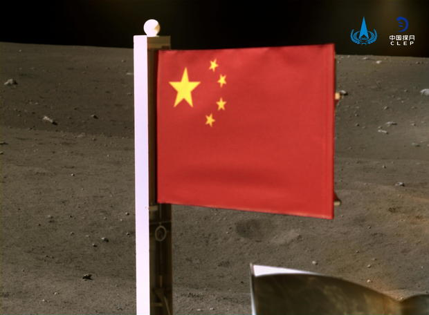
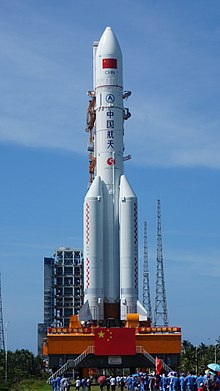

Exploring is something inherently human and since there is not much left to discover about Earth, humans have set their eyes on the darkness of the night sky to reach fo the stars. The first space race took place between the former USSR and USA, a tug of war in which both nations aimed to conquer space exploration. Pushing each other to their limits for 12 years until the americans with the apollo13 mission reached the lunar surface, rendering them an absolute victory in ther space race. Those incredible feats seem distant and certainly unbelievable. But we are alredy witnessing the second space race, in which nations are pushing for a permanent base in the moon and have alredy set their eyes on the red planet, Mars. The two racers to Mars are China and United States.
Elon is a renowned entrepreneur, known for his electric car company Tesla,his recently founded neuralink and relative to this matter, founder of SpaceX.
Since its founding SpaceX is nothing short from having achieved incredible feats. Their reusable rockets have allowed to reduce the astronomical cost of launching rockets to space. The first comercial flights to space have alredy been taken and there is a movie on the works featuring the legendary action actor Tom Cruise. Their powerful Merlin boosters have allowed them to create one of the most powerful rockets, Flacon Heavy, and one of the most versatile ones,Falcon9, which has alredy been flown more than 100 times to deliver people and cargo into orbit. Falcon9 is particularly used to deliver the satellites that will compose Starlink as well as deliver passengers to the ISS. But only the base booster is reusable making the top part space waste once it is alredy used. That's why SpaceX is currently aiming for project Starship.
Starship is a two-stage rocket, in which both components are capable of reaching orbit and landing themselves on themselves. Powered by the new Raptor engines it is still a project on the works and the top part, Starship spacecraft, has alredy taken flight twice. The Super Heavy rocket is as big as the Falcon9 with the stages combined. In total the rocket is 120m tall and is a fully reusable rocket., which promises to be the future of interplanetary tarvelling. Like the Flacon9 did when it was fully functional, Starship promises to be able to deliver 5 times its current payload limit. Speeding the process of putting in orbit the satelite constelation of Starlink and as well space exploration. Being the first aim of Starship reach for Mars and stablish a colony in there. As of recently, NASA has landed their second rover on Mars succesfully.
Long March is China's code name given to the rockets for its space exploration program. Long March is a very significant name for the country, its is the road communist take during the chinese civil war to retreat and gather up their forces to lead to their victory shortly afterwards. China's space program is nothing short to SpaceX's achievements. They have managed to put in orbit an space satation that sadly crashed shortly after it was put into orbit. And their second space stasion which is alredy in the works. Chinese rockets have achieved reusability in their rockets, but only partially. With their Long March rockets they have made it to th edark side of the moon to collect samples and they are the second country, after USA, to have placed their flag on the lunar surface.
Long March 5 is the rocket proyected to be the one that will guarantee China their ticket to landing the first crew mission to land on Mars. The rocket, similiar in size to Starship, is a fierce competitor to the american counerpart. With their own satellite alredy in its way to orbit the red planet, the chinese aren't slacking. However test flights are said to be taken near civilians. One particualr failed test flight crashed in the river of a small town near the test facilities, luckily no one was hurt during the incident
SpaceX's logo is property of Space Exploration Technologies Corp..